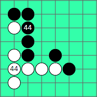
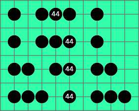
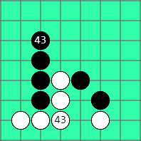
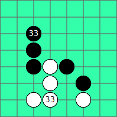

在單線棋型篇學到，連五是五子棋的獲勝條件，而活四有兩個點五可以連五，也是無法防守的。
下幾局後大家就應該會發現，在死四和活三的時候，正常需要花一子來防守，因此除非對手眼花，否則想靠單線進攻獲勝是不切實際的。
為了讓對方無法防守，我們將死四和活三交互組合，就形成最基本的取勝棋型雙死四、死四活三、雙活三又簡稱雙四、四三、雙三。 便可讓對方無法一次防住兩線而取勝。
初學時，勿將心力用於連五，而是專想辦法做出基本勝型，就算是在棋道中邁進一大步了。
| 棋型 | 圖例 |
雙四： 扣除鏡像對稱及旋轉對稱後 |
  |
四三： 扣除對稱後共有２２４種組合。 |
 |
雙三： 扣除對稱後共有７１種組合。 |
 |
本站的資源＞挑戰，可練習雙四、四三、雙三的各種組合。
五子棋是比的是連五的速度，速度快的一方我們稱之為先手。
雙四和四三，因為棋型裡有個四，所以會比雙三更快取勝。
試想一方下出雙三後，另一方接著下出四三，正常情況下，四三的一方將獲得勝利。